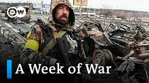

Sign in
Sign in
Home
There's mounting evidence that Russian forces in occupied areas of Ukraine have been systematically stealing grain and other produce from local farmers. The BBC has talked to farmers and analysed satellite images and shipping data to track where the grain is going
A few dozen miles from the frontline, Ukrainian farmer Dmytro describes how the business he nurtured over 25 years was lost in four months of Russian occupation.
The BBC tried to contact more than 200 farmers whose land is now in Russian-occupied territory. Dmytro - we are not using his real name to protect him from reprisals - was one of the few willing to meet us.
"They stole our grain. They destroyed our premises, destroyed our equipment."


26 May 2022
One morning in early June, a fire broke out at an obscure facility in Texas that takes natural gas from US shale basins, chills it into a liquid and ships it overseas. It was extinguished in 40 minutes or so. No one was injured.
It sounds like a story for the local press, at most — except that more than three weeks later, financial and political shockwaves are still reverberating across Europe, Asia and beyond.

13 Agu 2022
Videos

War in Ukraine: A week that shook the world | DW News

Starlink Mission

Watch live: How to avert a global food crisis? | World Economic Forum 2022
Starlink Mission
Starlink Mission
Starlink Mission
Starlink Mission